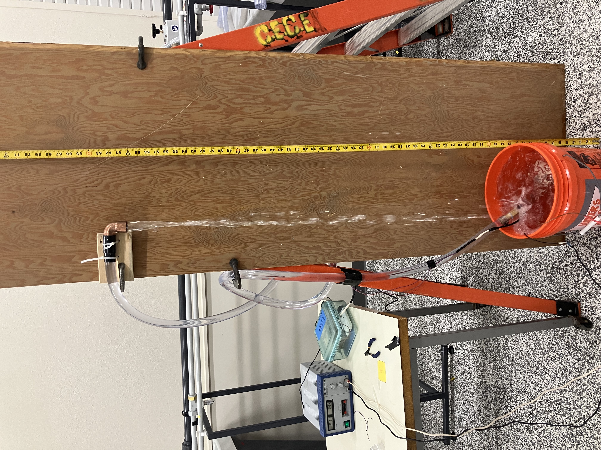

Laboratory 7A Sample Report#
Title : Bilge Pump Performance Curve#
Introduction#
This laboratory determines performance characteristics of a small bilge pump in various flow configurations.
The objective is to empirically determine the relationship between discharge (Q), head (H), and power input (P) for a small DC pump operating at variable discharge elevations, and to produce a pump curve (H vs Q) and evaluate power consumption.
Background Theory#
A pump curve is a graph showing how the head (H) produced by a pump varies with flow rate (Q).
The hydraulic system is analyzed to determine added head as a function of discharge from the modified Bernoulli equation:
where
\(~~~~h_p\) is the added head (TDH) from the pump,
\(~~~~z_2\) is the outlet elevation (variable),
\(~~~~z_1\) is the sump elevation (constant),
\(~~~~V\) is the velocity in the discharge pipe (variable),
\(~~~~L\) is the length of the discharge pipe (3.0478 meters, constant),
\(~~~~D\) is the diameter of the discharge pipe (0.01905 meters, constant),
\(~~~~f\) is the Darcy-Weisbach friction factor for a smooth pipe (0.039 for Re~3000)
Flow Rate (Q) is measured in L/min from the flow meter.
Power Input (P) is computed using: $\( P = V \times I \)$ where V is voltage and I is current.
Velocity (\(V\)) in meters per second is computed from flow rate using:
where
\(~~~~Q\) is in L/min and 0.000285 m³ is the pipe cross-sectional area.
Methods#
The experimental set-up is comprised of:
12V DC pump
Variable power supply
Flow meter
Flexible discharge pipe
Ruler or measuring tape
Water container
Stopwatch (optional)
An image of the system in operation is shown below

The current-limited power supply is visible on the left as is the flowmeter data collector; flow can also be determined by bucket-and-stopwatch. The discharge outlet can be moved to different locations above the supply tank to produce a pump curve. There is considerable splash and overflow, so a hose (not pictured) is used to keep the orange tank always full, ensuring a constant head at the supply location.
Experimental Procedure#
Prepare the apparatus
Connect pump to water reservoir.
Attach flexible pipe and flow meter inline.
Elevate discharge outlet to different known heights.
Conduct experiments
Fix power supply voltage (e.g., 12V).
Begin with lowest discharge height.
Record:
Voltage (V)
Current (I)
Flow Rate (Q)
Outlet Height (H)
Repeat for multiple heights.
Repeat at different voltage.
The current-limited power supply displays voltage on the left display, and current from the right display. In current limited conditions a small red indicator appears in the right display. Discharge is measured using the flowmeter as in prior laboratories; also you can use a bucket and stopwatch approach.
Results#
The results for a set of 9 experimental measurements are contained in the script below that generates a data table and ancillary computations automatically. The measurements are shown in the initial 5 columns of the dataframe.
import pandas as pd
# Input data
data = pd.DataFrame({
'Trial': [1, 2, 3, 4, 5, 6, 7, 8, 9],
'V (Volts)': [14.4, 14.1, 14.8, 14.2, 13.7, 12.1, 12.2, 13.4, 12.0],
'I (Amperes)': [0.85, 0.80, 0.83, 0.77, 0.73, 0.62, 0.62, 0.73, 0.64],
'Q (L/min)': [5.28, 4.67, 4.13, 3.65, 3.25, 0.42, 0.943, 2.98, 3.71],
'Z Outlet (m)': [0.7493, 1.3208, 1.7399, 2.0066, 2.0066, 2.0066, 1.8288, 1.8288, 1.524]
})
# Constants
g = 9.8 # m/s²
area = 0.000285 # m² cross-sectional area
L = 3.04878 # m, pipe length
D = 0.01905 # m, pipe diameter
f = 0.039 # estimated friction factor for Tygon tubing (at Re~3000)
H_suction = 0.3429 # m, suction head
# Computations
data[' P (W)'] = data['V (Volts)'] * data['I (Amperes)']
Q_m3_s = data['Q (L/min)'] * (1/1000) * (1/60)
data['Velocity (m/s)'] = Q_m3_s / area
data['V^2/2g (m)'] = (data['Velocity (m/s)'] ** 2) / (2 * g)
data['Head Loss (m)'] = f * (L / D) * data['V^2/2g (m)']
# Total Dynamic Head
data['TDH (m)'] = H_suction + data['Z Outlet (m)'] + data['Head Loss (m)']
# Additional constants
mu = 0.001 # Pa·s (N·s/m²) - dynamic viscosity of water
rho = 1000 # kg/m³
# Compute Reynolds number
data['Re_d'] = (rho * data['Velocity (m/s)'] * D) / mu
data
| Trial | V (Volts) | I (Amperes) | Q (L/min) | Z Outlet (m) | P (W) | Velocity (m/s) | V^2/2g (m) | Head Loss (m) | TDH (m) | Re_d | |
|---|---|---|---|---|---|---|---|---|---|---|---|
| 0 | 1 | 14.4 | 0.85 | 5.280 | 0.7493 | 12.240 | 0.308772 | 0.004864 | 0.030361 | 1.122561 | 5882.105263 |
| 1 | 2 | 14.1 | 0.80 | 4.670 | 1.3208 | 11.280 | 0.273099 | 0.003805 | 0.023751 | 1.687451 | 5202.543860 |
| 2 | 3 | 14.8 | 0.83 | 4.130 | 1.7399 | 12.284 | 0.241520 | 0.002976 | 0.018576 | 2.101376 | 4600.964912 |
| 3 | 4 | 14.2 | 0.77 | 3.650 | 2.0066 | 10.934 | 0.213450 | 0.002325 | 0.014509 | 2.364009 | 4066.228070 |
| 4 | 5 | 13.7 | 0.73 | 3.250 | 2.0066 | 10.001 | 0.190058 | 0.001843 | 0.011503 | 2.361003 | 3620.614035 |
| 5 | 6 | 12.1 | 0.62 | 0.420 | 2.0066 | 7.502 | 0.024561 | 0.000031 | 0.000192 | 2.349692 | 467.894737 |
| 6 | 7 | 12.2 | 0.62 | 0.943 | 1.8288 | 7.564 | 0.055146 | 0.000155 | 0.000968 | 2.172668 | 1050.535088 |
| 7 | 8 | 13.4 | 0.73 | 2.980 | 1.8288 | 9.782 | 0.174269 | 0.001549 | 0.009671 | 2.181371 | 3319.824561 |
| 8 | 9 | 12.0 | 0.64 | 3.710 | 1.5240 | 7.680 | 0.216959 | 0.002402 | 0.014990 | 1.881890 | 4133.070175 |
Discussion#
The script below plots the computed added head (TDH) from the pump, accounting for head loss in the system, and the measured flowrate (\(Q\)) and fits a quadratic model to the data. The model forces zero on the linear component of a 2nd order polynomial, to be consistent with hydraulic expectations of a centrifugal pump.
import numpy as np
import matplotlib.pyplot as plt
# Sample data
Q = np.array([5.28, 4.67, 4.13, 3.65, 3.25, 0.42, 0.943, 2.98, 3.71])
TDH = np.array([1.122561, 1.687451, 2.101376, 2.364009, 2.31003, 2.349692, 2.172668, 2.181371, 1.881890])
Power = np.array([12.24, 11.28, 12.284, 10.934, 10.001, 7.502, 7.564, 9.782, 7.68]) # Power Input in Watts
# Quadratic-only fit: H(Q) = a + c*Q²
X = np.vstack([np.ones_like(Q), Q**2]).T
coefs = np.linalg.lstsq(X, TDH, rcond=None)[0] # [a, c]
# Generate smooth Q for plotting fit
Q_fit = np.linspace(Q.min(), Q.max(), 200)
TDH_fit = coefs[0] + coefs[1] * Q_fit**2
# Create plot
fig, ax1 = plt.subplots(figsize=(8, 5))
# Primary axis: TDH vs Q
ax1.plot(Q, TDH, 'o', color='tab:blue', label='Measured TDH')
ax1.plot(Q_fit, TDH_fit, '-', color='tab:blue', label=f'TDH Fit: H = {coefs[0]:.2f} + {coefs[1]:.4f}Q²')
ax1.set_xlabel('Flow Rate Q (L/min)')
ax1.set_ylabel('Total Dynamic Head (m)', color='tab:blue')
ax1.tick_params(axis='y', labelcolor='tab:blue')
ax1.grid(True)
# Secondary axis: Power vs Q
ax2 = ax1.twinx()
ax2.plot(Q, Power, 'o', color='tab:red', label='Power Input (W)')
ax2.set_ylabel('Power Input (W)', color='tab:red')
ax2.tick_params(axis='y', labelcolor='tab:red')
# Combined legend
lines1, labels1 = ax1.get_legend_handles_labels()
lines2, labels2 = ax2.get_legend_handles_labels()
#ax1.legend(lines1 + lines2, labels1 + labels2, loc='upper center')
ax1.legend(lines1 + lines2, labels1 + labels2,
loc='upper left', bbox_to_anchor=(0.01, 0.35))
plt.title('TDH and Power Input vs Flow Rate')
plt.tight_layout()
plt.show()
Conclusions#
A pump curve is created for the small bilge pump, and plotted above. The fitted curve uses a forced quadratic model, the actual measurements are faithful to a centrifugal pump curve.
The equation for the pump is
where \(Q\) is in liters per minute (\(LPM\))
The pump is designed for 12 VDC power, in the experiments the power supply exceeded 12 VDC, which would be common in the maritime design setting (alternators are capable of 14.4 VDC to recharge lead-acid batteries on a boat, so the experimental values are reasonable).
Discussion Questions#
How does head change as flow rate increases? Using the fitted curve, as discharge increases the added head decreases; an anticipated result.
How does power consumption relate to flow rate? As discharge increases input power also increases – at low flows (at shutoff) power does not drop to zero, thus the pump uses power even when it cannot deliver any flow.
Would this pump be suitable for a head requirement of 1.2 m? Yes - in fact one of the experimental points is nearly at 1.2 meters; the pump delivers about 5 LPM at this head requirement.
What measurement errors may affect your results?
The flowmeter is non-linear in these experiments (based on a few time-to-fill measurements) so that is a major source of error
The discharge condition is not a true “jet”, so the assumption of zero pressure across the entire flow area is suspect.
The outlet elevations are estimated using a ruler and level to the approximate pipe centerline (although the error is probably small enough to be insignificant)
References#
Completed data table
Graphs (H vs Q and optionally P vs Q)
Fitted pump curve equation
Answers to discussion questions